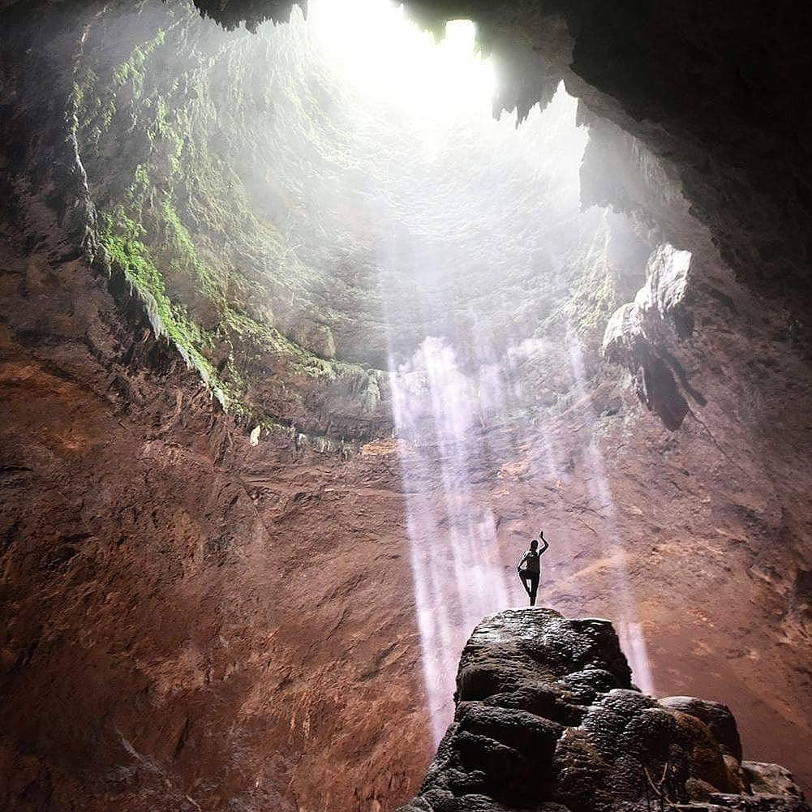

Gunung Kidul

PARIWISATA

KULINER

DAERAH ISTIMEWA YOGYAKARTA,INDONESIA
Gunung Kiduladalah salah satu kabupaten di Daerah Istimewa Yogyakarta, Indonesia.Kabupaten ini berbatasan dengan Kabupaten Klaten dan Kabupaten Sukoharjo di utara dan timur laut, Kabupaten Wonogiri di timur, Samudra Hindia di selatan, serta Kabupaten Bantul dan Kabupaten Sleman di barat dan barat laut.Sebagian besar wilayah kabupaten ini berupa perbukitan dan pegunungan kapur, yakni bagian dari Pegunungan Sewu
Gunung Kidul merupakan Wilayah Kabupaten Gunungkidul termasuk daerah beriklim muson tropis (Am), dengan topografi wilayah yang didominasi dengan daerah kawasan perbukitan karst. Wilayah selatan didominasi oleh kawasan perbukitan karst yang banyak terdapat goa-goa alam dan juga sungai bawah tanah yang mengalir. Dengan kondisi tersebut menyebabkan kondisi lahan di kawasan selatan kurang subur yang berakibat budidaya pertanian di kawasan ini kurang optimal
Gunung Kidul memiliki puluhan pantai indah nak eksotis di pesisir selatan. Tak kurang dari limapuluhan pantai berjajar dari ujung barat hingga ujung timur.contohnya Air Terjun Banyu Tibo, Watunene, Watu Lawang, Busung, Jagang Kulon, Jogan, Klumpit, Lambor, Sundak, Ngetun, Ngondo, Nguluran, Ngungap, Pakundon, Sawahan, Siung, Ngandong, Seruni, Songlibeng, Watutogok, Weru, Timang, Muncar, Slili, Pantai Pulang Sawal/Indrayanti, Kelosirat, PokTunggal
Gelaran Bejiharjo Karangmojo, Gunung Kidul 52281 Indonesia
Mangunan, Dlingo, Bantul Regency, Special Region of Yogyakarta 55783
Dusun Bedalo,Kabupaten Gunung kidul,Daerah Istimewa Yogyakarta
Desa Girikarto,Kabupaten Gunung Kidul,Daerah Istimewa Yogyakarta